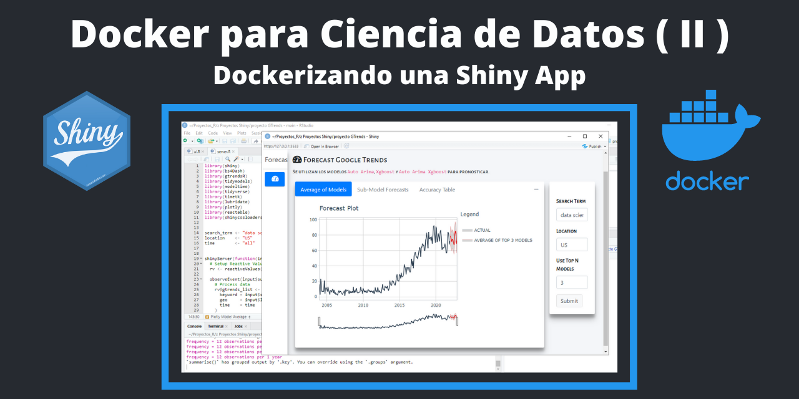

En el blog anterior sobre Docker para Ciencia Datos se hizo un breve introducción de los principales terminos de Docker y las bondades de crear entornos aislados para ejecutar un aplicación de Shiny.
Los dashboards en Shiny son una herramienta muy poderosa, pero un desafío importante es la implementación (deployment).
Hoy quiero hacer un breve explicación de como dockerizar una shiny app del blog anterior que sea más fácil de reproducir, implementar y escalar.
Por qué se usa Docker?

En Docker existe algo que se llama contenedor que es un entorno aislado para ejecutar una aplicación, es decir, solo se emula un sistema operativo Linux mas las bibliotecas. Un contenedor es más liviano que una máquina virtual ya que solo se utilizan los recursos asignados al contenedor y el entorno creado es el mismo. El objetivo final es poder utilizar la shiny app y que esté disponible para cualquier usuario.
Construyendo una imagen para la Shiny App

Los contenedores, para poder ver en vivo nuestra Shiny app, se crean a partir de imágenes que se definen mediante instrucciones en un archivo llamado Dockerfile.
Ahora, vamos a contruir una imagen para nuestra Shiny App a partir de una imagen base.
Paso 1. Tener el proyecto de la app terminada:
Es este caso la aplicación Shiny ya está terminada y la tengo en la carpeta proyecto GTrends que vendría ser la carpeta raiz del proyecto, que contiene los archivos principales ui.R y server.R y la carpeta www que solo sirve para embellecer de la interfaz del usuario.
Ademas existen otros archivos que se explica mas adelante. Por el momento, los archivos .gitignore y README.md los utilizo porque tengo proyectado subir este repositorio a GitHub y sea público, el archivo .gitignore sirve para no mostrar ciertos archivos al publico y README.md para mostrar alguna documentación del proyecto.
Paso 2. El archivo Dockerfile


En la carpeta raiz del proyecto debe tener un archivo Dockerfile. Este archivo contiene las intrucciones para contruir la imagen.
Los contenedores se contruyen a partir de imagenes base, contextualizado un poco, una imagen base para una shiny app pueden ser: el programa R mas las bibliotecas de linux mas el paquete Shiny. En el archivo Dockerfile se debe especificar la imagen base a usar. Por suerte, existen muchas imagenes bases ya construidas para proyectos con Shiny y ciertos paquetes de R ya listo para descargar desde el repositorio de Dockerhub.
En este caso voy a utilizar la imagen rocker/tidyverse:latest que es una imagen pública del Dockerhub que contiene una versión estable de R, RStudio y algunos paquetes de R.
Con el comando FROM se especifica la imagen base de partida
Con el comando COPY se indica que copie los archivos del proyecto de mi carpeta local (esto se indica con un punto) a la carpeta del contenedor /GT_Dashboard que crearemos.
El comando WORKDIR es para definir el directorio de trabajo del contenedor que contiene los archivos del proyecto shiny que mas tarde se ejecutarán.
El comando EXPOSE indica que el contenedor se puede conectar al puerto indicado al ejecutarse.
Debido que la Shiny App tiene algunos paquetes como shinydashboard, bs4Dash, gtrendsR, tidymodels, y muchas mas, hay que indicarle al Dockerfile los paquetes de R a instalar para que funcione la Shiny App. Por suerte, cuando se usa imagenes de Rocker se puede usar una sintaxis sencilla para listar los paquetes, estos deben comenzar con **RUN install2.r –error ** que es como una envoltura de paquetes de R a instalar.
RUN install2.r --error \
shiny \
shinydashboard \
bs4Dash \
gtrendsR \
tidymodels \
modeltime \
timetk \
plotly \
reactable \
shinycssloaders \
lubridateLuego, al docker file hay que indicarle que archivo de R debe ejecutarse para mostrar la Shiny App.
En mi caso tengo un archivo starter.R que contiene el comando de R para ejecutar la shiny app.
Paso 3. Construir la imagen
Una vez definido el archivo Dockerfile hay mandar a contruirlo ejecutando en la terminal (en la carpeta raiz del proyecto) el siguiente comando:
El texto pfzambra/fgtrends es el nombre de la imagen que quieres darle. En mi caso lo nombro así debido que voy a subir la imagen al repositorio de DockerHub (debe tener:
La construcción de la imagen puede tomar varios minutos.
Con el siguiente comando podemos listar las imagenes que hemos creado:
Paso 3. Ejecutar el contenedor
Esta parte es la mas interesante ya que podemos ver nuestra Shiny App implementada. Hay que ejecutar el siguiente comando:
Luego, podemos ir al un navegador y escribir en la barra de direcciones para mostra nuestra app:

Para ver un listado del contenedor ejecutándose hay que escribir:
Para detener el contenedor y ya no mostrar la app hay que ejecutar:
Subir la imagen a DockerHub (paso opcional)
Para subir la imagen a DockerHub hay que tener una cuenta en DockerHub, luego ejecutar:
Ahora cualquier persona puede descargarse la imagen y ejecutarlo en su máquina:
Luego, ir al un navegador:
Esto ha sido una introducción de como construir una imagen de una aplicacion Shiny y luego ejecutarla.